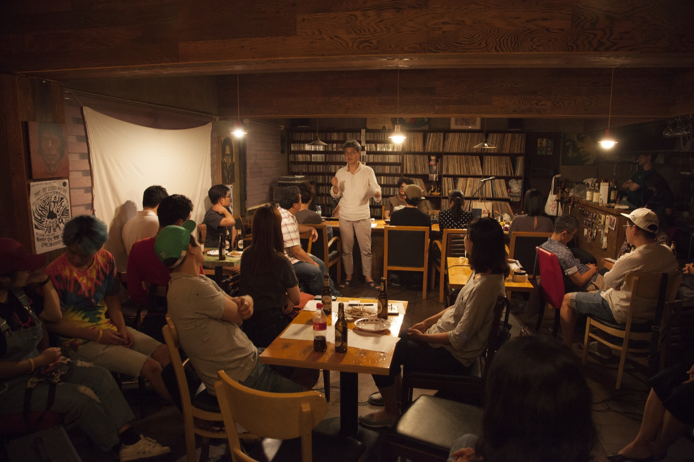
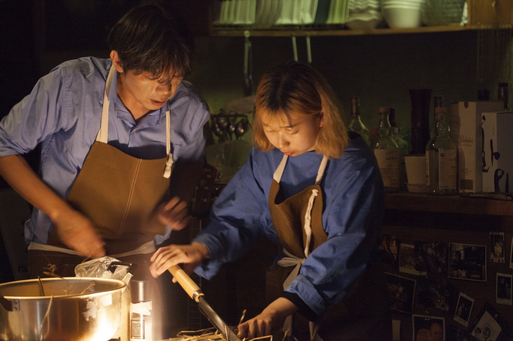
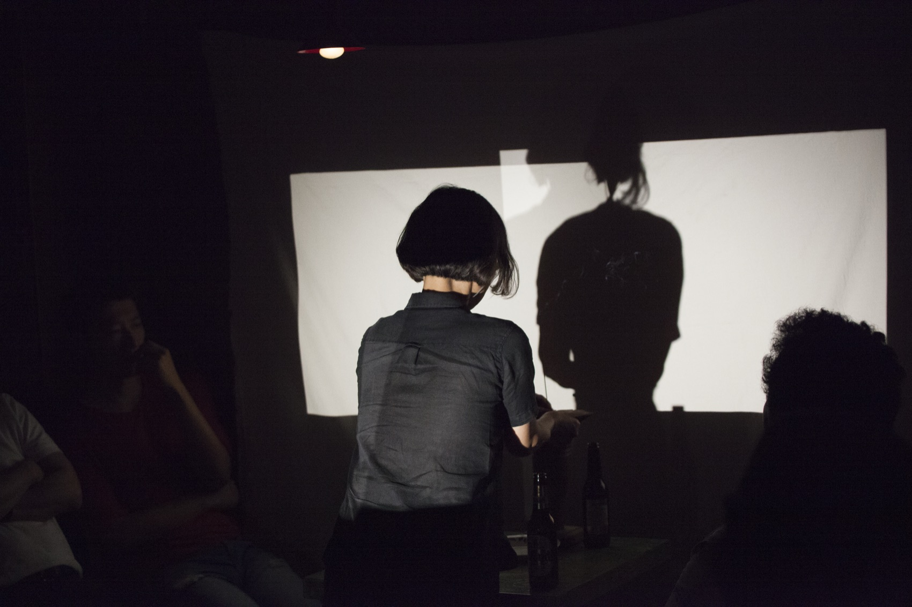
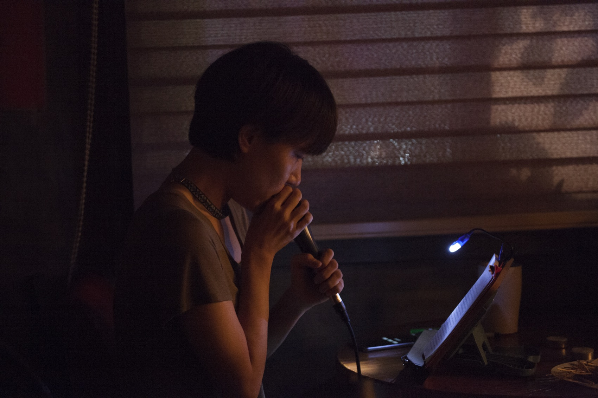
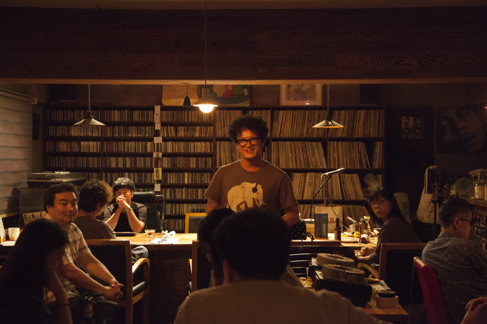
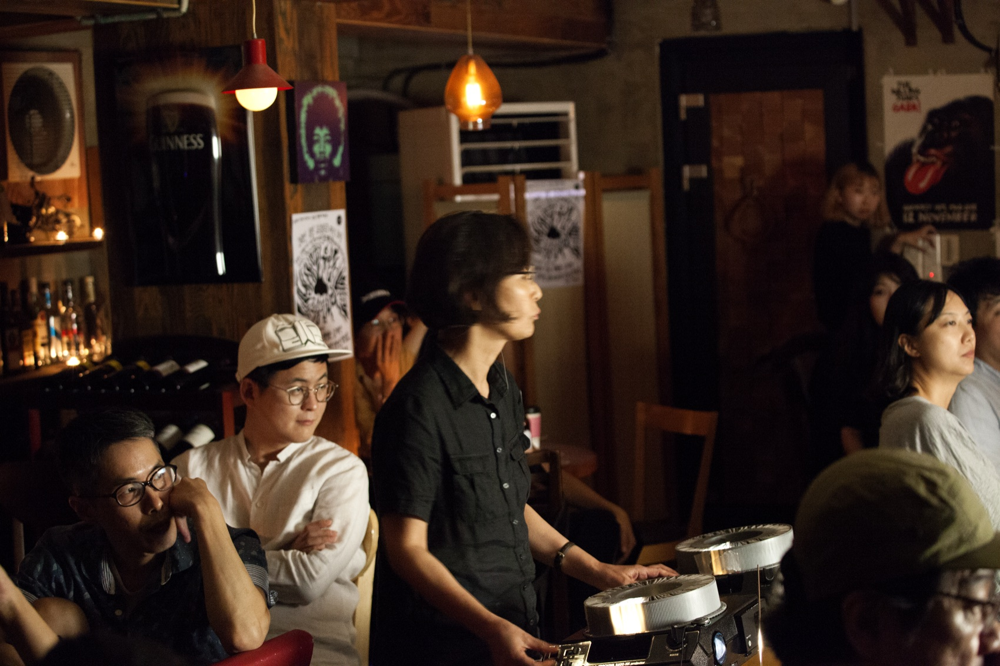
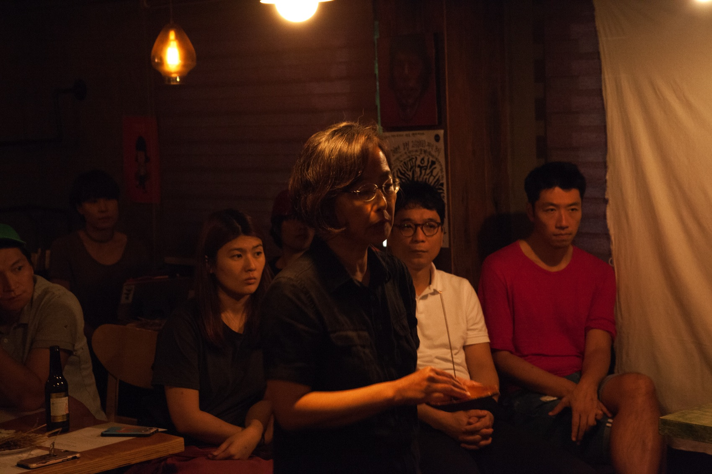

Performance — 2018
Sorry for the Smell냄새 피워서 죄송합니다 · 비껴가는 사람들
후각이라는 감각을 통해 기억을 여행하는 퍼포먼스. 일곱 명의 예술가가 각자 하나씩, 일곱 개의 냄새를 피운다.
A performance that travels through memory by way of smell. Seven artists, each raising one scent of their own.
시각·청각·후각·미각·촉각 중 우리는 정보의 대부분을 시각에 의존하지만, 인간의 시각은 흔히 믿는 것만큼 정확하지 않습니다. 정확성을 따진다면 오히려 다른 감각기관들이 더 총체적이고 정밀할 때가 많습니다. 그중에서도 후각은 기억과 밀접하게 연결되어 있어, 특정한 냄새 하나가 아주 오래전의 한 순간으로 우리를 순식간에 데려가기도 합니다. 그만큼 후각은 전체적인 감각입니다.
‘냄새 피워서 죄송합니다’는 그 전체의 구조를 탐구하는 작업입니다. 당신에게는 어떤 기억의 향기가 있는가? 그 냄새는 어떻게 당신이 인식하지 못하는 순간에도 드러나자마자 당신을 기억 여행자, 혹은 시간의 여행자로 만드는가? 만약 당신에게 치명적인 기억이 있다면, 당신은 아주 오래전부터 하나의 냄새를 갖고 있을 것입니다.
시인·소설가·음악가·사진가·연출가 등 서로 다른 분야의 예술가 일곱이 ‘냄새’ 하나를 놓고 각자의 퍼포먼스를 만들었습니다. 요리쇼, 타자기, 슬라이드 프로젝션, 쑥뜸, 낭독, 그라인딩, 최면 — 형식은 제각각이지만 냄새는 서로 섞인다는 성질을 구조로 삼아, 각 퍼포먼스의 시작과 끝이 3분씩 겹치도록 짰습니다. 앞사람의 냄새가 아직 남아 있는 채로 다음 냄새가 피어오릅니다.
Among the senses we lean most on sight, yet human vision is not as precise as we believe — by the measure of accuracy, the other organs are often more whole and more exact. Smell above all is bound tightly to memory: one scent can set us down in a distant time before we notice. Smell is a total sense, and this work explores the structure of that totality. Seven artists from different fields — poets, novelists, a musician, a photographer, a director — each made a piece around a single theme. Cooking show, typewriter, slide projection, moxibustion, recitation, grinding, hypnosis: the forms differ, but because smells mix, the pieces were built to overlap by three minutes at each seam. The next scent rises while the previous one still hangs in the room.
- 연출
- Direction
- Kim Jae Min 김제민
- 조연출·기획
- Assistant director
- 차예진
- 참여작가
- Artists
- 강정 · 권병준 · 김제민 · 김태용 · 김효나&김인경 · 박영선 · 함성호
- 후원
- Support
- 닻올림
- 시리즈
- Series
- ReadingLydia (2017) → Sorry for the Smell (2018)
- 키워드
- Keywords
- smell · memory · overlap · total sense
그룹 — 비껴가는 사람들
The group
비껴간다는 것
To slip past
비껴가는 사람들은 시인 함성호, 소설가 서준환, 연출가 김제민을 주축으로 여러 분야의 예술가가 모여 협업하는 프로젝트 그룹입니다. 정기 창작 회의를 통해 테마를 정하고, 전시·퍼포먼스 등 다양한 형식으로 그 테마를 구현합니다. 2017년 <리딩 리디아>로 시작해 <냄새 피워서 죄송합니다>가 두 번째 작품입니다.
Bikkyeoganeun Saramdeul (‘people who slip past’) is a project group centred on the poet Ham Seong-ho, the novelist Seo Jun-hwan and the director Kim Jae Min, joined by artists from many fields. Themes are chosen in regular meetings and realised as exhibitions, performances and other forms. It began with <ReadingLydia> in 2017; <Sorry for the Smell> is the second work.
“비껴가는 사람들은 움직이지 않는 정신들, 애써 규정지으려는 모든 시도들을 의심한다. 예술은 삶이고, 삶은 움직이며, 언제나 그것을 포획하려는 시도들로부터 비껴간다.
비껴간다는 것은 피하는 것도, 의도된 것도 아니다. 그것은 주체를 나에서 나의 바깥에 둔다는 의미다. 나의 바깥이 움직인다는 것은 그것이 이미 내 인식대상이 아니라는 말이다.
우리가 인식할 수 없는 것을 고정된 실체처럼 대하는 어리석음을 버려라. 그것은 미신이다. 모든 것은 잘못 놓여져 있다.”
“We doubt unmoving minds, and every attempt to pin things down. Art is life, life moves, and it always slips past whatever tries to capture it.
To slip past is neither avoidance nor intention. It means placing the subject outside of myself. That my outside moves is to say it is already not an object of my cognition.
Abandon the folly of treating what we cannot know as fixed substance. That is superstition. Everything is wrongly placed.”
— 비껴가는 사람들
구성 — 일곱 개의 냄새, 3분씩 겹치며
Programme — seven scents, overlapping by three minutes
일곱 개의 퍼포먼스
Seven performances
퍼포먼스와 퍼포먼스 사이에는 3분 연결점이 있다. 앞 사람의 행위가 완전히 끝나기 전에 다음 사람이 시작하고, 그 사이 조연출은 창문을 열어 방을 환기시킨다.
Between pieces sits a three-minute connection point. The next performer begins before the previous one has finished, while the assistant director opens the windows to air the room.
01
쇠죽을 끓이며
Boiling Cattle Porridge
권병준
먹방 요리쇼처럼 쇠죽을 끓이며 과정을 설명한다. 볏짚과 마른 풀을 썰어 넣고 쌀겨를 붓고 소금으로 간한다. 관객은 모두 소가면을 쓰고 있다가, 끓인 쇠죽을 나눠 먹고 다같이 소처럼 운다.
Cattle porridge is boiled in the manner of a TV cooking show — straw and dried grass chopped in, rice bran, salt. The audience all wear cow masks, share the porridge, and low together like cattle.
02
코읽기 / 코치기
reading / typing nosescore
김태용
고골리의 「코」와 아쿠타가와 류노스케의 「코」를 발췌해 중첩 낭독하며 즉흥적인 구음과 코 소리를 만든다. 이어 두 소설의 문장을 악보로 만들어 ‘의도된 타자기’로 타이핑한다.
Excerpts from Gogol’s and Akutagawa’s ‘The Nose’ are read in superimposition, with improvised mouth- and nose-sounds; their sentences are then scored and struck out on an ‘intentional typewriter’.
03
변주, 1996
Variation, 1996
박영선
슬라이드 프로젝션 + 한지 태우기 + 낭송. 슬라이드 64컷으로 두 컷의 사진 사이에 놓인 기억(시간)을 빛과 향과 소리로 변주해 재생한다.
Slide projection, burning hanji paper, recitation. Across 64 slides, the memory (the time) lying between two photographs is replayed as light, scent and sound.
04
화신火身 혹은 육향肉香
Body of Fire, Scent of Flesh
강정
정수리에 2분, 팔꿈치에 5분, 상반신에 8분 — 몸에 직접 쑥뜸을 올리며 텍스트를 읽는다. 살이 타는 냄새가 시간과 함께 번져 나간다.
Two minutes on the crown, five on the elbow, eight across the torso — texts are read while moxa burns directly on the body, the scent spreading with the time.
05
비극과 운명의 냄새
The Smell of Tragedy and Fate
김효나 & 김인경
‘즙즙’의 두 사람이 언어악보를 바탕으로 속삭임 퍼포먼스를 한다. 속삭임은 8~9분째 클라이맥스에 올랐다가 서서히 잦아든다. 자리는 그날 공간을 보고 즉흥으로 정했다.
The duo ‘Jeupjeup’ perform a whispering piece from a language score; the whisper climbs to its climax around the eighth or ninth minute, then thins away. Their positions were decided on the day, improvised to the room.
06
냄새빻기
Grinding Smells
김제민
커피를 갈아 막자사발에 빻고, 그날의 신문을 펼쳐 읽다가 손으로 찢어 기사째 빻고, 마늘을 빻는다. 빻은 것을 쇠죽에 집어넣어 함성호에게 건넨다.
Coffee is ground and pestled, the day’s newspaper read then torn and pounded article by article, garlic crushed. What is ground goes into the cattle porridge and is handed on to Ham Seong-ho.
07
냄새, 그 기억을 떠올리며
Smell, Recalling That Memory
함성호
띵샤를 3분간 울려 앞의 행위를 완전히 닫은 뒤, 관객을 편한 자세로 눕히고 시를 읽는다 — 안국역의 빵 냄새, 된장찌개, 허약한 칫솔과 싸구려 비누 냄새. 그리고 최면을 건다. 셋을 세면 관객은 저마다의 기억 속으로 내려간다.
A tingsha rings for three minutes to close what came before; the audience settles, and poems are read — bread at Anguk Station, doenjang stew, a flimsy toothbrush and cheap soap. Then a hypnosis: on the count of three, each listener descends into their own memory.
김제민의 퍼포먼스
Kim Jae Min’s piece
「냄새빻기」
‘Grinding Smells’
커피콩을 그라인더로 갈아 막자사발에 담고 빻습니다. 그날의 신문을 펼쳐 원하는 부분을 소리 내어 읽고, 손으로 찢어 조각낸 다음 기사들을 빻습니다. 마늘을 빻습니다. 그리고 빻은 것들을 권병준이 끓인 쇠죽에 넣고, 함성호에게 건넵니다. 연결점이 은유가 아니라 손에서 손으로 건네지는 물질이 되는 순간입니다.
Coffee beans are ground, tipped into a stone mortar and pestled. The day’s newspaper is opened, a passage read aloud, then torn by hand and pounded article by article. Garlic is crushed. What has been ground goes into the cattle porridge Kwon Byung-jun boiled, and is passed on to Ham Seong-ho — the moment the connection point stops being a metaphor and becomes matter handed from one pair of hands to the next.
빻는 사이에 낭독되는 것은 ‘냄새’라는 낱말을 끝없이 붙여 만든 목록입니다. 언어가 갈리고 빻여 형체를 잃어가는 동안, 목록은 마지막 한 줄에 가서야 도착합니다.
What is recited between the poundings is a list built by fixing the word ‘smell’ to everything in reach. As language is ground down and loses its shape, the list arrives, only in its final line, somewhere.
냄새빻기 — 낭독
공연냄새 연극냄새 바람개비냄새 친구냄새 일냄새 인공지능냄새 비냄새 하늘냄새 창문냄새 핸드폰냄새 디지털냄새 뜨거운냄새 땀냄새 어머니냄새 말냄새 줄냄새 나무냄새 식물냄새 스타벅스냄새 예술가냄새 눈물냄새 아침냄새 슬픈냄새 웃긴냄새 글냄새 침대냄새 냉장고냄새 책상냄새 방냄새 강아지풀냄새 튤립냄새 꽃냄새 장미냄새 비껴가는냄새 사람들냄새 제비꽃냄새 동네냄새 돈까스냄새 치킨냄새 지하철냄새 집냄새 발냄새 손냄새 겨드랑이냄새 피부냄새 몸냄새 내냄새 시냄새 오늘냄새 내일냄새 사는냄새 죽는냄새 어머니냄새 와이프냄새 소설냄새 희곡냄새 이런냄새 저런냄새 안경냄새 쓰는냄새 말하는냄새 너냄새 내냄새 남북냄새 정상냄새 회담냄새 살아냄새 있는냄새 존재의냄새 이유냄새 다냄새
냄새가 냄새를 따라가다 보니까
레몬냄새가 되었다
과정 — 연결점 큐시트
Process — the connection-point cue sheet
앞사람의 행위가 다음 사람의 큐가 된다
Each action becomes the next performer’s cue
일곱 개의 퍼포먼스를 잇기 위해 별도의 큐시트가 만들어졌습니다. 신호는 조명이나 음향이 아니라 앞사람이 지금 하고 있는 행위 그 자체입니다.
A separate cue sheet was written to join the seven pieces. The signal is not a light or a sound cue but the action the previous performer is carrying out.
- 권병준 텍스트를 낭독한다 → 김태용 타자기를 친다
- 김태용 다시 타자기를 친다 → 박영선 슬라이드로 소리와 빛을 낸다
- 박영선 향으로 필름을 태운다 → 강정 향을 전달받아 뜸을 뜬다
- 강정 단전에 뜸을 뜬다 → 김효나&김인경 속삭임을 시작한다
- 김효나&김인경 속삭임이 잦아들고 2분 뒤 → 김제민 커피를 간다
- 김제민 마늘을 빻는다 → 함성호 마늘에 대해 이야기한다
* 3분 연결점마다 조연출이 창문을 열어 환기시킨다. 향을 태우는 구간에서는 에어컨을 잠시 끄기도 한다.
* At every three-minute connection point the assistant director opens the windows. During the incense-burning sections the air conditioning is briefly switched off.
공연 이후 — 자체 리뷰
After the performance — internal review
남은 기록
What was left on record
공연이 끝난 뒤 그룹은 스스로에 대한 리뷰를 남겼습니다. 성과와 실패를 나란히 적어둔 이 메모는 다음 작업으로 건너가기 위한 발판이었습니다.
The group wrote its own review afterwards. Setting achievements and failures side by side, the note was a foothold for crossing into the next work.
- 효과가 있었던 것
- What worked
- 관객에게 직접 말을 거는 시도가 집중력을 높였다. 중첩 구간에서 솔로 퍼포먼스로 넘어갈 때 조명으로 변화를 준 것이 효과적이었고, 관객의 시선이 실제로 이동하는 것이 보였다.
- Speaking directly to the audience sharpened their attention. Shifting the lighting at the handover from an overlap into a solo worked — you could see the audience’s eyes move.
- 남은 과제
- Open problems
- 사운드가 강해 전체가 사운드 퍼포먼스처럼 읽혔다. 형식에 주제를 인위적으로 붙인 인상을 준 작업이 있었다. 대부분 솔로 시간을 초과했고, 3분 연결점을 하나의 단일 퍼포먼스처럼 구성하다 보니 그 3분이 길게 느껴졌다 — 중첩은 단계적으로 짜여야 한다. 슬라이드 프로젝션이 무대 정중앙을 점유해 다른 퍼포먼스가 들어갈 여지를 좁혔다.
- The sound was strong enough that the whole read as a sound performance. Some pieces felt as though the theme had been fastened onto the form after the fact. Most solos ran over time, and because each three-minute overlap was built as a single piece in itself, those three minutes felt long — overlap needs to be staged in degrees. The slide projection occupied dead centre, narrowing the room left for everything else.
공연 기록 — 코케인, 서울 마포구. 2018. 8. 24.
Performance record — Cocaine, Mapo-gu, Seoul. 24 Aug 2018





